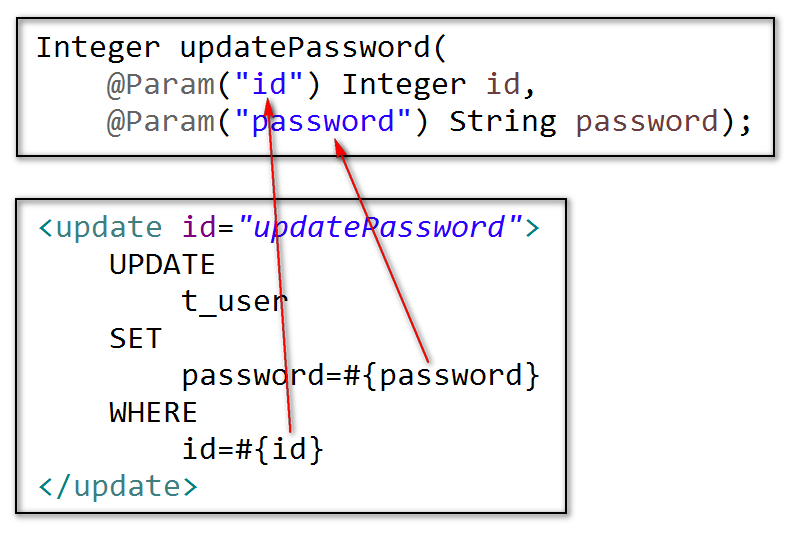
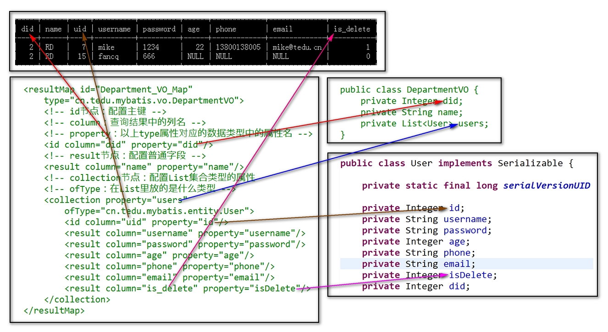

1. 抽象方法中多个参数的问题
在使用MyBatis时，接口中的抽象方法只允许有1个参数，如果有多个参数，例如：
Integer updatePassword(
Integer id, String password);
在最终运行时，Java源代码会被编译成.class文件，就会丢失参数名称，所以，运行时会提示“找不到某参数”的错误：
Caused by: org.apache.ibatis.binding.BindingException: Parameter 'password' not found. Available parameters are [arg1, arg0, param1, param2]
解决方案就是“封装”，例如将以上2个参数id、password封装到1个User对象中，或将这2个参数封装到1个Map对象中……但是，无论哪种做法，都存在调用方法不便利的问题，MyBatis提供的解决方案就是添加注解：
Integer updatePassword(
@Param("id") Integer id,
@Param("password") String password);
通过@Param注解，当执行时，MyBatis会将多个参数封装为1个Map对象来执行，就不需要开发人员自行封装！
也可以小结为：当抽象方法的参数超过1个时，必须添加@Param注解，并且，在XML配置中，使用#{}表示的变量的名称其实是@Param注解中的值！

2. 动态SQL
2.1. 基本概念
在MyBatis中，在配置XML映射时，可以使用某些逻辑节点，实现逻辑判断或者循环等等，使得每次执行的SQL语句是可能随着参数发生变化的，即：参数不同，最终执行的SQL语句可能不同，所以，称之为“动态SQL”。
2.2. 标签
例如存在以下需求：根据多个id同时删除多条数据。则抽象方法可以设计为：
Integer deleteByIds(Integer[] ids);
需要执行的SQL语句例如：
DELETE FROM t_user WHERE id IN (?,?,?);
但是，以上SQL语句中的问号所表示的值的数量是不确定的，将根据调用方法时的参数Integer ids来决定，所以，可以使用<foreach>来实现：
<delete id="deleteByIds">
DELETE FROM
t_user
WHERE id IN (
<foreach collection="array"
item="id" separator=",">
#{id}
</foreach>
)
</delete>
在<foreach>的配置中，常用属性有：
collection：如果映射的抽象方法只有1个参数时，如果遍历的数据类型是数组，则取值为array，如果遍历的数据类型是List集合，则取值为list；如果映射的抽象方法有多个参数，则取值为注解中的名称；item：遍历过程中元素的名称，相当于Java代码中for (Integer id : ids)中的id，在动态SQL中，也是<foreach>节点的子级中通过#{}表示的变量名separator：分隔符，例如在IN语句中应该是id IN (6,8,9)，各个值之间需要使用逗号进行分隔，所以，以上代码中取值为,open：整个遍历得到的SQL语句的部分的最左侧的字符，例如在SQL语句中不写括号时，该属性的值可以是(close：与open对应，是SQL语句的部分的最右侧的字符，例如)
2.3. 标签
假设希望提供某个查询功能，尽量满足所有的查询需求，即：可以通过参数决定WHERE子句，决定ORDER BY子句，甚至决定LIMIT子句，则抽象方法可以设计为：
List<User> find(
@Param("where") String where,
@Param("orderBy") String orderBy,
@Param("offset") Integer offset,
@Param("count") Integer count);
匹配的映射为：
<select id="find"
resultType="cn.tedu.mybatis.entity.User">
SELECT
id, age,
password, username,
phone, email
FROM
t_user
<if test="where != null">
WHERE
${where}
</if>
<if test="orderBy != null">
ORDER BY
${orderBy}
</if>
<if test="offset != null">
LIMIT
#{offset},#{count}
</if>
</select>
可以看到，<if>用于进行逻辑判断，在标签内的test中，如果需要表示参数，是不需要添加#{}格式的，直接写参数名称即可（即使只有1个参数，也应该正确的填写参数名称）。
在以上映射的SQL中，有2种占位符，分别使用#{}和${}，前者，用于对值进行占位，可以替换在预编译的SQL语句中的?，在实际执行时，也是预编译的，所以，在使用#{}格式时，无须考虑参数的类型，后者，用于对非值的语句部分进行占位，在实际执行时，是直接拼接到SQL语句中的，并不具备预编译的效果。例如以上String where参数表示的是SQL语句中的WHERE子句，如果根据id查询数据，其值可以是String where ="id=1";，如果根据用户名查询数据，则值应该是String where = "username='Jack'";。
通常，并不建议使用某1个方法及其对应的映射来完成许多不同的操作，例如以上功能几乎可以完成所有的单表简单查询，但是，不应该这样使用，因为，为了实现更加通用的效果，可能需要很多
<if>进行判断，执行时效率偏低，并且，不同的功能，对于查询的字段要求是不一样的，也许某个功能只需要查询20个字段中的2个而已，而通用的查询如果把20个字段全部查出来，内存开销也会有浪费！
3. 查询结果与类的对应
3.1. 使用别名
在某些字段的设计中，可能名称包含多个单词，数据库语句是不区分大小写的，所以，应该将字段名所有字母小写，各单词之间使用下划线(_)分隔，例如：
is_delete 是否已删除：0-未删除，1-已删除
ALTER TABLE t_user ADD COLUMN is_delete INT DEFAULT 0;
如果数据表发现变化，则实体类也应该跟随调整，在实体类添加的属性就应该是Integer isDelete;。
查询时，MyBatis会将查询结果封装到对象中，其要求是查询结果中的列名(字段名)与实体类的属性名必须完全一致，而以上关于“是否已删除”的字段名是is_delete，而User类中对应的属性是isDelete，则查询时需要通过AS定义别名：
<select id="findAll"
resultType="cn.tedu.mybatis.entity.User">
SELECT
id, age,
password, username,
phone, email,
is_delete AS isDelete
FROM
t_user
</select>
在定义别名时，AS关键字并不是必须的，直接通过空格分隔原名和别名即可。
3.2. 使用VO类
创建部门信息表t_department，其中包括id, name
CREATE TABLE t_department (
id INT AUTO_INCREMENT,
name VARCHAR(20) UNIQUE NOT NULL,
PRIMARY KEY(id)
) DEFAULT CHARSET=UTF8;
INSERT INTO t_department (name) VALUES
('UI'), ('RD'), ('TEST');
在用户信息表中添加did表示用户所属的部门的id
ALTER TABLE t_user ADD COLUMN did INT;
如果尝试执行多表关联查询，必然没有匹配的实体类可以封装查询结果，则需要创建VO（Value Object）类，它不同于实体类，实体类是与某1张数据表完全对应的，而VO类是与实际应用需求相对应的！
假设要查询用户数据，且部门应该是显示部门的名称，则VO类应该是：
package cn.tedu.mybatis.vo;
public class UserVO {
private Integer uid;
private String username;
private String password;
private Integer age;
private String phone;
private String email;
private Integer isDelete;
private Integer did;
private String name;
// SET/GET，toString()，Serializable
}
则设计的抽象方法的返回值就应该是List集合中存放VO类型的数据：
List<UserVO> findAll2();
需要注意的是，在查询的SQL语句中，需要自定义别名：
SELECT
t_user.id AS uid,
username,
password,
age,
phone,
email,
is_delete AS isDelete,
did,
name
FROM
t_user
INNER JOIN
t_department
ON
t_user.did=t_department.id;
3.3. resultMap
在查询时，<select>节点必须指定结果的类型，可以通过resultType属性来指定，也可以通过resultMap属性来指定。
当有直接对应的查询结果时，可以使用resultType，取值一般是实体类的类型，或VO类的类型。
某些查询可能需要将查询结果进行特殊的封装，例如查询时存在1对多、多对多、多对1等关系，则需要使用resultMap来配置封装的方式。
例如：根据id查询部门信息，且要求查询结果中包含该部门中所有用户。
设计的VO类应该是：
public class DepartmentVO {
private Integer did;
private String name;
private List<User> users;
}
设计的接口和抽象方法应该是：
public interface DepartmentMapper {
DepartmentVO findById(Integer id);
}
复制得到DepartmentMapper.xml，然后，需要执行的SQL语句应该是：
SELECT
t_department.id AS did,
name,
t_user.id AS uid,
username,
password,
age,
phone,
email,
is_delete
FROM
t_department
INNER JOIN
t_user
ON
t_user.did=t_department.id
WHERE
t_department.id=2;
以上代码中，自定义别名是因为需要区分查询结果中的列的名称，并不是因为需要与数据类型中的属性对应，关于查询结果的列名与数据类型的属性名的对应，可以通过
<resultMap>中的配置来完成！
所需要配置的<resultMap>为：
<resultMap id="Department_VO_Map"
type="cn.tedu.mybatis.vo.DepartmentVO">
<!-- id节点：配置主键 -->
<!-- column：查询结果中的列名 -->
<!-- property：以上type属性对应的数据类型中的属性名 -->
<id column="did" property="did"/>
<!-- result节点：配置普通字段 -->
<result column="name" property="name"/>
<!-- collection节点：配置List集合类型的属性 -->
<!-- ofType：在List里放的是什么类型 -->
<collection property="users"
ofType="cn.tedu.mybatis.entity.User">
<id column="uid" property="id"/>
<result column="username" property="username"/>
<result column="password" property="password"/>
<result column="age" property="age"/>
<result column="phone" property="phone"/>
<result column="email" property="email"/>
<result column="is_delete" property="isDelete"/>
</collection>
</resultMap>
配置时，与其它文件的关系如图所示：
